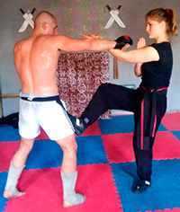

Обучение
Приглашаем всех желающих приобщится к вековым ценностям КУНФУ.
В программу обучения входят:
- Традиционный Монастырский стиль Вин Чунь КУНФУ
- Спортивное направление Китайский бокс - Игры пяти зверей (стили: Тигр, Дракон, Журавль, Змея, Леопард)
- Гимнастика, акробатика, общефизическая и функциональная подготовка, закалка тела - алмазная рубашка
- Философия и традиции Воинских искусств
Два раза в году проводятся традиционные турниры по Китайскому боксу. Весной, в мае, турнир посвящен "Дню рождения Школы Вин Чунь КУНФУ "Лабиринт". Осенью, в ноябре, турнир посвящен "Дню рождения Брюса Ли".
Занятия проводятся:
- в группах
- индивидуальные
- семинары
Адреса залов и контактные данные для записи находяться здесь